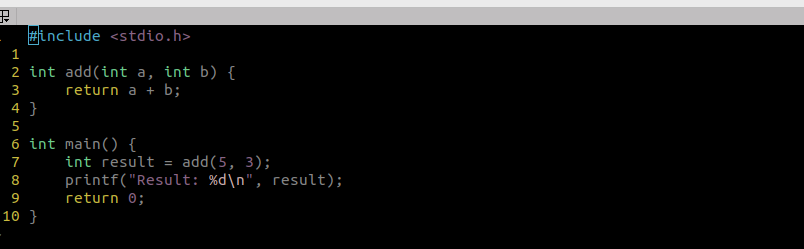
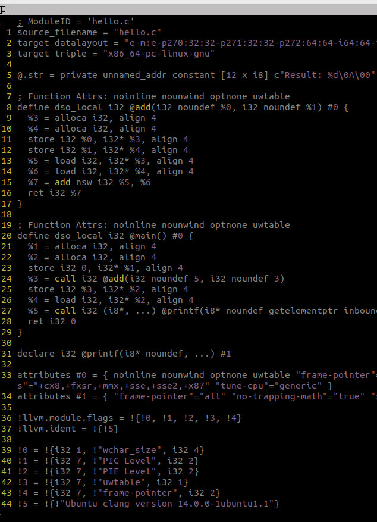

Low-Level Virtual Machine (LLVM)
LLVM (Low-Level Virtual Machine) is a collection of tools and technologies designed to help programmers build software more efficiently. Imagine you are writing a program in a high-level language, like C++ or Python. Before the computer can run your program, it needs to convert it into something it understands, which is machine code (the language of 1s and 0s). This process of converting your program into machine code is called "compilation."
LLVM helps with this process, but instead of just creating machine code for one specific type of computer, it creates something called "Intermediate code." This intermediate code can then be converted into machine code for many different kinds of computers. This flexibility is one of LLVM's superpowers.
To put it simply, LLVM is like a translator for computer programs. It helps take programs written in different programming languages and makes sure they can run on different types of computers smoothly. This is useful for things like making software run faster, work on different devices, or even improve the security of the code.
Intermediate Representation (IR)
LLVM's core strength lies in its Intermediate Representation (IR), which is a low-level, platform-independent code representation. The IR can be thought of as a form between source code (like C++ or Python) and machine code (specific to a CPU architecture).
◉ Static Single Assignment (SSA) form: LLVM IR is represented in SSA form, making optimizations easier.
◉ Three-phase compilation: Frontend, Optimizer, and Backend.
Frontend, Optimizer, Backend
◉ Frontend: Converts source code (C, C++, Rust, Swift) into LLVM IR.
◉ Optimizer: Applies transformations to make code faster and smaller.
◉ Backend: Converts optimized IR into machine code for a specific architecture (x86, ARM, etc.).
Implementation
Let's break down how LLVM works by using a simple C code example.

1. Frontend: Generating LLVM IR

Summary
LLVM abstracts the process of generating machine code for different architectures and provides an extensible framework for optimizations and runtime compilation. It has become an essential part of modern compilers.